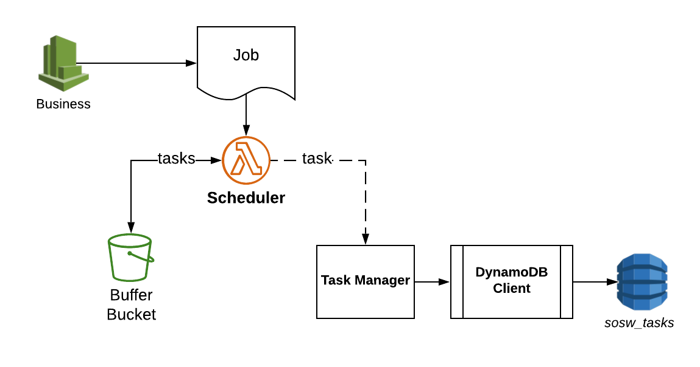

Scheduler
Scheduler is the public interface of sosw for any applications who want to invoke some orchestrated Lambdas.
It’s main role is to transform some business job to the actual payload of Lambda invocations. It respects the
configurable rules for chunking specific for different workers.

Scheduler Workflow
TASKS_TABLE_CONFIG = {
'row_mapper': {
'task_id': 'S',
'labourer_id': 'S',
'greenfield': 'N',
'attempts': 'N',
'closed_at': 'N',
'completed_at': 'N',
'desired_launch_time': 'N',
'arn': 'S',
'payload': 'S'
},
'required_fields': ['task_id', 'labourer_id', 'created_at', 'greenfield'],
'table_name': 'sosw_tasks',
'index_greenfield': 'sosw_tasks_greenfield',
'field_names': {
'task_id': 'task_id',
'labourer_id': 'labourer_id',
'greenfield': 'greenfield',
}
}
TASK_CLIENT_CONFIG = {
'dynamo_db_config': TASKS_TABLE_CONFIG,
'sosw_closed_tasks_table': 'sosw_closed_tasks',
'sosw_retry_tasks_table': 'sosw_retry_tasks',
'sosw_retry_tasks_greenfield_index': 'labourer_id_greenfield',
'ecology_config': {},
'labourers': {
'some_function': {
'arn': 'arn:aws:lambda:us-west-2:0000000000:function:some_function',
'max_simultaneous_invocations': 10,
},
},
}
SCHEDULER_CONFIG = {
'queue_bucket': 'some-bucket',
'task_config': TASK_CLIENT_CONFIG,
'job_schema': {},
'job_schema_variants': {
'default': {
'chunkable_attrs': [
# ('section', {}),
# ('store', {}),
# ('product', {}),
]
}
}
}
Job Schema
After the Scheduler has parsed and validated the job from the event, it provides custom_config from this job. In case the job_schema_name is passed, a certain job_schema type will be applied from job_schema_variants, otherwise it takes the default one. Each time the Scheduler is called it overwrites the custom_config and use new specified job_schema type.
View Licence Agreement- class sosw.scheduler.Scheduler(*args, **kwargs)[source]
Scheduler is converting business jobs to one or multiple Worker tasks.
Job supports a lot of dynamic settings that will coordinate the chunking.
Parameters:
max_YOURATTRs_per_batch: int
This is applicable only to the lowest level of chunking. If isolation of this parameters is not required, and all values of this parameter are simple strings/integers the scheduler shall chunk them in batches of given size. By default will chunk to 1kk objects in a list.
- apply_job_schema(name: str = None)[source]
Apply a job_schema from job_schema_variants by the name or apply the default one.
- chunk_dates(job: Dict, skeleton: Dict = None) List[Dict][source]
There is a support for multiple not nested parameters to chunk. Dates is one very specific of them.
- chunk_job(job: dict, skeleton: Dict = None, attr: str = None) List[Dict][source]
Recursively parses a job, validates everything and chunks to simple tasks what should be chunked. The Scenario of chunking and isolation is worth another story, so you should put a link here once it is ready.
- construct_job_data(job: Dict, skeleton: Dict = None) List[Dict][source]
Chunks the job to tasks using several layers. Each layer is represented with a chunker method. All chunkers should accept job and optional skeleton for tasks and return a list of tasks. If there is nothing to chunk for some chunker, return same job (with injected skeleton) wrapped in a list.
Default chunkers:
Date list chunking
Recursive chunking for chunkable_attrs
- get_and_lock_queue_file() str[source]
Either take a new (recently created) file in local /tmp/, or download the version of queue file from S3. We move the file in S3 to locked_ by prefix state or simply upload the new one there in locked_ state.
- Returns:
Local path to the file.
- get_db_field_name(key: str) str[source]
Could be useful if you overwrite field names with your own ones (e.g. for tests).
- static get_index_from_list(attr, data)[source]
Finds the index ignoring the ‘s’ at the end of attribute.
- static get_isolate_attributes_from_job(data: dict) Dict[source]
Get a dictionary with settings for isolation from data.
- initialize_from_job_schema()[source]
Initialize attributes that are mapped to the job_schema in self.config
- last_week(pattern: str = 'last_week') List[str][source]
Returns list of dates (YYYY-MM-DD) as strings for last week (Sunday - Saturday) :param pattern: :return:
- needs_chunking(attr: str, data: Dict) bool[source]
Recursively analyses the data and identifies if the current level of data should be chunked. This could happen if either isolate_attr marker in the current scope or recursively in any of sub-elements.
- Parameters:
attr – Name of attribute you want to check for chunking.
data – Input dictionary to analyse.
- parse_job_to_file(job: Dict)[source]
Splits the Job to multiple tasks and writes them down in self.local_queue_file.
- Parameters:
job (dict) – Payload from Scheduled Rule. Should be already parsed from whatever payload to dict and contain the raw job
- static pop_rows_from_file(file_name: str, rows: int | None = 1) List[str][source]
Reads the rows from the top of file. Along the way removes them from original file.
- Parameters:
file_name (str) – File to read.
rows (int) – Number of rows to read. Default: 1
- Returns:
List of strings read from file top.
- previous_x_days(pattern: str) List[str][source]
Returns a list of string dates from today - x - x
For example, consider today’s date as 2019-04-30. If I call for previous_x_days(pattern=’previous_2_days’), I will receive a list of string dates equal to: [‘2019-04-26’, ‘2019-04-27’]
- process_file()[source]
Process a file for creating tasks, then uploading it to S3. In case of execution time reached its limit, spawning a new sibling to continue the processing.
- property remote_queue_file
Full S3 Key of file with queue of tasks not yet in DynamoDB.
- property remote_queue_locked_file
Full S3 Key of file with queue of tasks not yet in DynamoDB in the locked state. Concurrent processes should not touch it.
- set_queue_file(name: str = None)[source]
Initialize a unique file_name to store the queue of tasks to write.
- property sufficient_execution_time_left: bool
Return if there is a sufficient execution time for processing (‘shutdown period’ is in seconds).
- today(pattern: str = 'today') List[str][source]
Returns list with one datetime string (YYYY-MM-DD) equal to today’s date.
- upload_and_unlock_queue_file()[source]
Upload the local queue file to S3 and remove the locked_ by prefix copy if it exists.
- validate_list_of_vals(data: list | set | tuple | Dict) list[source]
Supported resulting values: str, int, float.
Expects a simple iterable of supported values or a dictionary with values = None. The keys then are treated as resulting values and if they validate, are returned as a list.